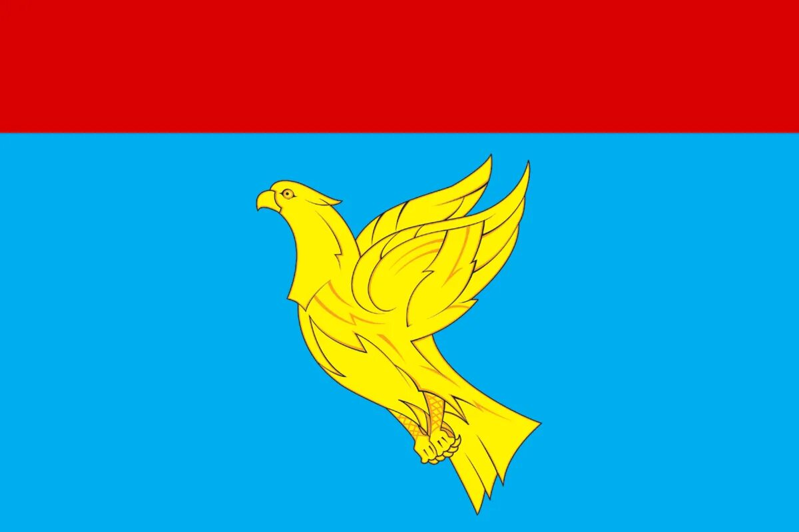
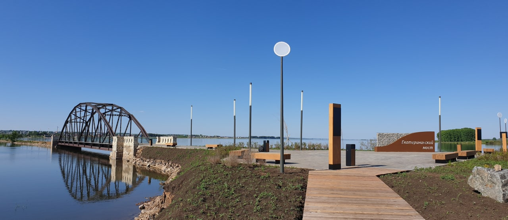

Мензелинский район — административно-территориальная единица и муниципальное образование в составе Республики Татарстан. Расположен в северо-восточной части республики, на левобережье реки Кама, недалеко от границ с Башкортостаном и Удмуртией, в 290 километрах от Казани. Административный центр — город Мензелинск. .
